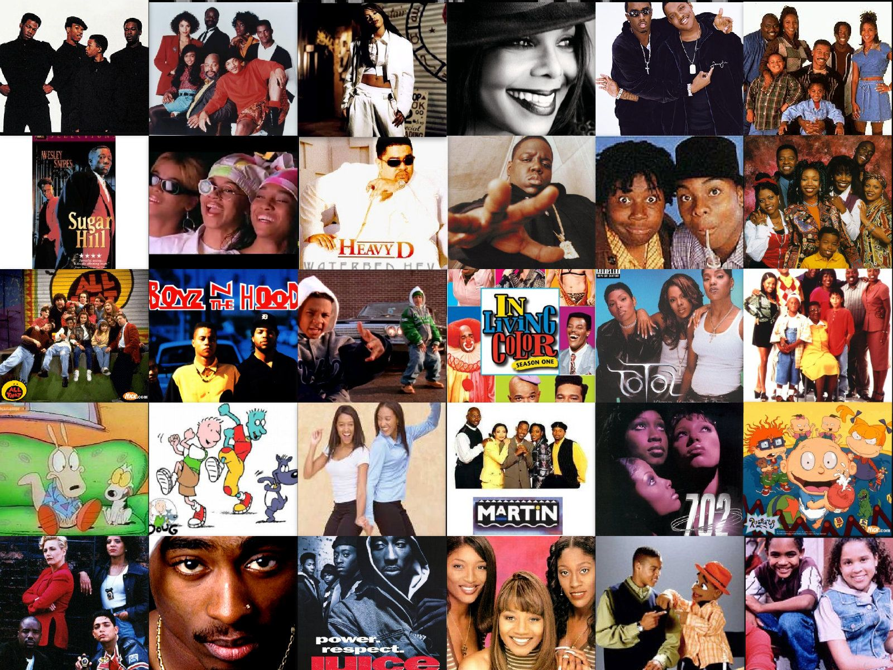
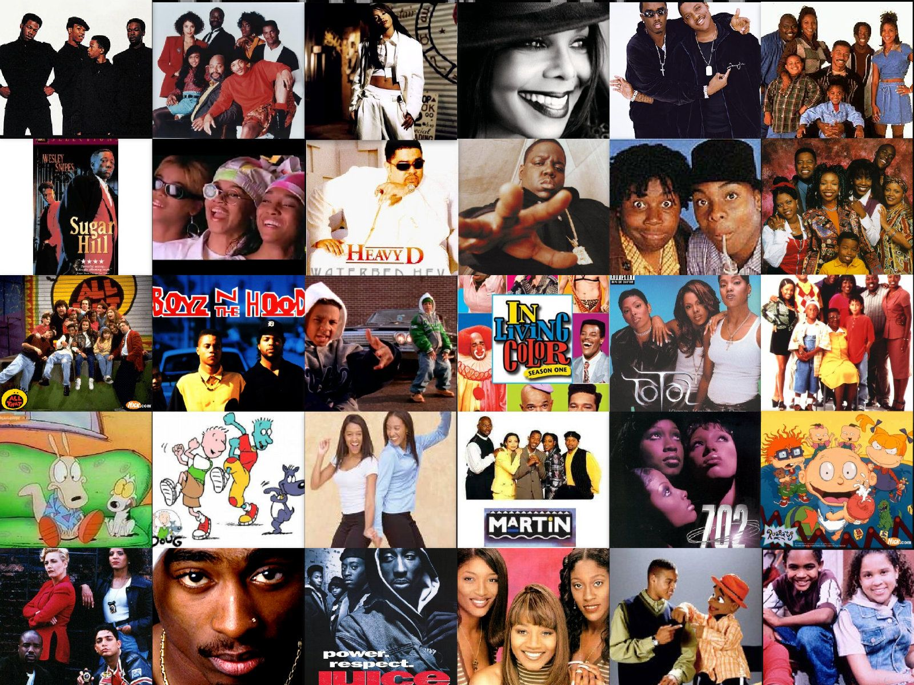

90's Era
It's a proven fact that music, movies and TV shows made in the 90's are classics.
 90's ClassicsFavorite R&B Groups
- H-Town
- Xscape
- Boyz II Men
- SWV
- Silk
- TLC
- BlackStreet
- 112
Favotire R&B Artists
- Tupac
- Usher
- Biggie
- Aaliyah
- Lil Kim
- Jay-z
It's a proven fact that music, movies and TV shows made in the 90's are classics.
 90's ClassicsHere is a quote from Pop in the 90's: Everything for Everyone article
"Though, it goes against received wisdom to say so, the 90's deserve to go down as the decade when the music industry opened its doors to all comers. Openmindedness, rather than any single sound, was its great contribution: a lesson in diversity. And listeners responded, buying their favorites even if they resented everything else.""